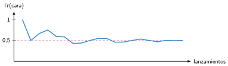

Apartado 14.2
Frecuencia relativa y probabilidad
Si repetimos un experimento aleatorio muchas veces y anotamos cuántas veces ocurre un suceso, su frecuencia relativa es
\[fr(A) = \dfrac{\text{número de veces que ocurre } A}{\text{número de repeticiones}}\]

Esta forma de asignar probabilidades sirve aunque los resultados no tengan todos la misma probabilidad, como al lanzar una chincheta. Con una hoja de cálculo podemos simular miles de lanzamientos con la función =ALEATORIO.ENTRE(1;6).
14.2.1
Experimenta: lanza una chincheta \(50\) veces y anota cuántas cae con la punta hacia arriba. Calcula la frecuencia relativa. Junta tus resultados con los de tus compañeros: ¿se estabiliza la frecuencia relativa?